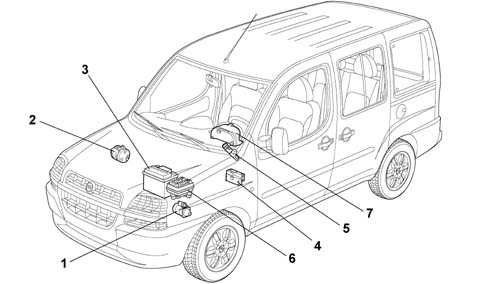
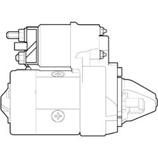
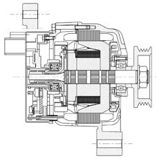
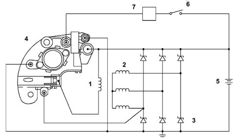
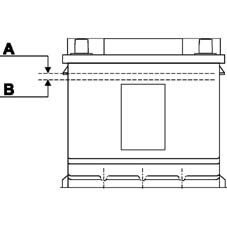
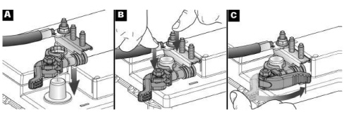

INTRODUCTION - CURRENT GENERATION
- Path
- Descriptions > 55 ELECTRICAL EQUIPMENT > 5530 CURRENT GENERATION > INTRODUCTION - CURRENT GENERATION
- Kind
- system description
- Applies to
- engines: 1.4 8v, 1.6 16v, 1.3 JTD 16V, 1.9 JTD 8V; production: da 12/03; only with equipment: MY 2005
- Interactive page
- https://sloeber94.github.io/elrnDB-fDbl/en/#/223000250
Applies to: engines: 1.4 8v, 1.6 16v, 1.3 JTD 16V, 1.9 JTD 8V; production: da 12/03; only with equipment: MY 2005
LOCATION OF COMPONENTS ON VEHICLE
The location of the components is illustrated below.

1. Starter motor (A20)
2. Alternator (A10)
3. Battery (A01)
4. Electronic management control unit (M01) (Body Computer)
5. Ignition (H01)
6. Junction unit (B01)
7. Instrument panel (E50)
FUNCTION
The vehicle is equipped with a starting and recharing system that has the following functions:
- The starting circuit has the function of rotating the engine, at a certain speed, to allow the engine management control unit to prime the ignition.
- The recharging circuit has the function of guaranteeing all the energy required for the correct operation of the individual electrical/electronic devices on board the vehicle.

FUNCTION
The alternator is a rotary machine that transforms mechanical energy into electrical energy

FUNCTION
If there is no recharging signal or it is irregular, before completely dismantling the alternator, carry out the following checks:
- Check the tension of the belt
- Check the tighening of the nut on the alternator positive terminal (B+), making sure that the washer is present
- Check the tighening of the nut on the energizing terminal (D+), making sure that the washer is present
- Check the tightening of the nuts on the positive node in the engine compartment
- Check the tightening of the bolts securing the negative terminal to the bodyshell
- Check that the battery terminals are clean and correctly tightened
OPERATING PRINCIPLE
The alternator shaft (rotor) is turned by the crankshaft via a belt.
The rotor generates a magnetic field that sets up an alternating current in the fixed winding (stator).
A diode rectifier bridge at the back of the alternator allows the alternating current to be transformed into a direct current that is sent to recharge the battery and provide a power supply for various devices.
A voltage regulator, inside, keeps the voltage supplied constant at around 10 Volt for all engine load and speed ranges.
Two small internal radial fans cool the alternator. When the ignition key is turned to the ON position, an ignition-operated supply signal reaches pole D+ of the alternator via the Body Computer.
On receiving this signal, the voltage regulator, in turn, energizes the rotor coil to create an electromagnetic field for producing magnetic poles (alternate north and south). When the engine is started, a rotary motion is transmitted to the alternator thereby also causing the rotation of the electromagnetic field which, on cutting the coils for the three stator windings, produces an alternating induced voltage.
The voltage produced in this way cannot be used directly by the vehicle system, before being distributed it is rectified by means of an electrical circuit with a bridge configuration composed of 6 zener diodes.

1. Alternator rotor
2. Alternator stator
3. Press fit type zener diodes bridge
4. Voltage regulator
5. Battery
6. Ignition key
7. Body computer (M1)
BATTERY
The correct level of electrolyte in the battery is illustrated below

A. Maximum electrolyte level
B. Minimum electrolyte level
ELECTRICAL/MECHANICAL SPECIFICATIONS
Three different models of battery are fitted on the Doblò
ELECTRICAL SPECIFICATIONS:
Battery | Absorption Max. | Voltage. | Internal elements |
|---|---|---|---|
48 Ah | 350A | 12V | Number of plates: 6 positive - 6 negative |
40 Ah | 200A | 12V | Number of plates: 4 positive -3 negative |
50 Ah | 250A | 12V | Number of plates: 5 positive -4 negative |
The battery should never be subjected to rapid charging at voltages above 15.5 Volt or high recharging amperages.
During the design stage, the correct dimensions of the battery for every model/trim level also take into account the absorption from loads when the ignition is switched off.
These absorptions should not exceed 0.6 mA for every Ah of battery capacity; this condition is adopted to guarantee that, after the vehicle has been stationary for a month with all the loads that are not ignition-dependent on, the residual capacity of the battery is half of the rated capacity, corresponding to a charge status that can guarantee starting in normal ambient temperature conditions.
5530B BATTERY AND LEADS
Negative battery terminal lead
To facilitate the removing-refitting of the negative lead from the battery, a new lead with the terminal secured to the negative pole having a rapid release-attachment device controlled by a lever replacing the traditional nut and bolt has been adopted.
Detaching the terminal
Open the lever and detach the terminal.
Refitting the terminal
Make sure that the release/attachment lever is in the opening position (A).
Fit the terminal on the battery pole and press it down fully (end of travel) (B).
Tighten the lever (C).
